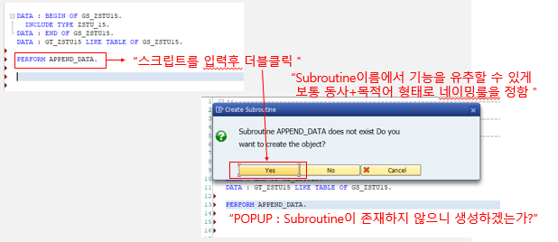

20221012 - PERFORM, PARAMETER
PERFORM
ABAP 프로그램의 Subroutine: PERFORM, FUNCTION MODULE
Subroutine의 PERFORM은 FORM으로 시작하여 END FORM으로 종료되는 구문을 의미
스크립트의 모듈화, 재사용, 구조화를 주목적
PERFORM FORM_NAME. " PERFORM 구문을 통해 Subroutine 호출시
FORM FORM_NAME. " FORM 구문 수행
ENDFORM.

Parameter
Subroutine을 호출하는 구문과 호출 받는 구문 사이에 주고 받는 값
보통 Subroutine 내에서 parameter는 DATA 구문으로 정의하는 일반적인 LOCAL 변수
Subroutine을 호출할 때 사용되는 parameter: actual parameter (넘겨주는 변수)
Subroutine에서 사용되는 parameter: formal parameter (받는 변수)
PERFORM의 USING, CHANGING 구문을 사용하여 parameter 선언 (단, subroutine과 순서를 같게 지정)
PERFORM에서 parameter 선언: USING, CHANGING 구문 사용 (단, subroutine과 순서를 같게 지정)
FORM [FORM_NAME] USING P1 TYPE type
FORM [FORM_NAME] USING VALUE(P2) TYPE type
FORM [FORM_NAME] CHANGING P3 TYPE type
FORM [FORM_NAME] CHANGING VALUE(P4) TYPE typeUSING


DATA: BEGIN OF GS_ZSTU15.
INCLUDE TYPE ZSTU_15.
DATA: END OF GS_ZSTU15.
DATA: GT_ZSTU15 LIKE TABLE OF GS_ZSTU15.
DATA: GV_ZKNAME LIKE ZSTU_15-ZKNAME.
DATA: GV_ZCODE LIKE ZSTU_15-ZCODE.
GV_ZCODE = 'SSU-01'.
PERFORM APPEND_DATA USING GV_ZCODE GV_ZKNAME.
WRITE:/ GV_ZCODE, GV_ZKNAME.
FORM APPEND_DATA USING P_ZCODE P_ZKNAME.
DATA LV_ZCODE LIKE ZSTU_15-ZCODE.
LV_ZCODE = 'SSU-01'.
P_ZCODE = LV_ZCODE.
SELECT SINGLE ZKNAME FROM ZSTU_15 INTO P_ZKNAME WHERE ZCODE = P_ZCODE.
ENDFORM.USING VALUE


DATA: BEGIN OF GS_ZSTU15.
INCLUDE TYPE ZSTU_15.
DATA: END OF GS_ZSTU15.
DATA: GT_ZSTU15 LIKE TABLE OF GS_ZSTU15.
DATA: GV_ZKNAME LIKE ZSTU_15-ZKNAME.
DATA: GV_ZCODE LIKE ZSTU_15-ZCODE.
GV_ZCODE = 'SSU-01'.
PERFORM APPEND_DATA USING GV_ZCODE GV_ZKNAME.
WRITE:/ GV_ZCODE, GV_ZKNAME.
FORM APPEND_DATA USING VALUE(P_ZCODE) P_ZKNAME.
DATA LV_ZCODE LIKE ZSTU_15-ZCODE.
LV_ZCODE = 'SSU-01'.
P_ZCODE = LV_ZCODE.
SELECT SINGLE ZKNAME FROM ZSTU_15 INTO P_ZKNAME WHERE ZCODE = P_ZCODE.
ENDFORM.CHANGING

DATA: BEGIN OF GS_ZSTU15.
INCLUDE TYPE ZSTU_15.
DATA: END OF GS_ZSTU15.
DATA: GT_ZSTU15 LIKE TABLE OF GS_ZSTU15.
DATA: GV_ZKNAME LIKE ZSTU_15-ZKNAME.
DATA: GV_ZCODE LIKE ZSTU_15-ZCODE.
GV_ZCODE = 'SSU-01'.
PERFORM APPEND_DATA USING GV_ZCODE CHANGING GV_ZKNAME.
WRITE:/ GV_ZCODE, GV_ZKNAME.
FORM APPEND_DATA USING P_ZCODE CHANGING P_ZKNAME.
SELECT SINGLE ZKNAME FROM ZSTU_15 INTO P_ZKNAME WHERE ZCODE = P_ZCODE.
ENDFORM.CHANGING VALUE

DATA: BEGIN OF GS_ZSTU15.
INCLUDE TYPE ZSTU_15.
DATA: END OF GS_ZSTU15.
DATA: GT_ZSTU15 LIKE TABLE OF GS_ZSTU15.
DATA: GV_ZKNAME LIKE ZSTU_15-ZKNAME.
DATA: GV_ZCODE LIKE ZSTU_15-ZCODE.
GV_ZCODE = 'SSU-01'.
PERFORM APPEND_DATA USING GV_ZCODE CHANGING GV_ZKNAME.
WRITE:/ GV_ZCODE, GV_ZKNAME.
FORM APPEND_DATA CHANGING VALUE(P_ZCODE) VALUE(P_ZKNAME).
DATA: LV_ZCODE LIKE ZSTU_15-ZCODE.
LV_ZCODE = 'SSU-01'.
P_ZCODE = LV_ZCODE.
SELECT SINGLE ZKNAME FROM ZSTU_15 INTO P_ZKNAME WHERE ZCODE = P_ZCODE.
ENDFORM.Parameter 전달방법
Subroutine은 Using과 Changing 구문으로 parameter를 주고 받게 되는데, 3가지 유형으로 분류
- call by value
- call by reference
- call by value and result
Call by Value
actual parameter와 formal parameter가 물리적으로 다른 메모리 영역을 가짐
VALUE 구문에서 Formal parameter는 자신의 메모리를 가지고, subroutine을 호출할 때 actual parameter의 값은 formal parameter에 복사됨
formal parameter의 값이 변경되더라도 actual parameter 값에는 영향을 미치지 않음
Call by Reference
물리적으로 같은 메모리 영역을 공유하여 넘겨주며 같은 주소 값을 가짐
Formal parameter는 자신의 메모리를 가지지 않고, subroutine이 호출되는 동안 actual parameter의 주소값을 가짐
즉, Subroutine을 호출한 프로그램의 메모리에서 작업
Call by Value and Result
변수의 값을 넘겨주고 받는 구문에서 작업을 성공적으로 수행하였을 경우 변경된 값을 되돌려줌
물리적으로는 다른 영역을 사
Parameter TYPE 정의
FORM 구문 내의 Formal parameter는 TYPE과 LIKE 구문을 이용해 모든 ABAP DATA TYPE을 사용
명시적으로 지정하지 않으면 Generic TYPE으로 정의되고, actual parameter의 기술적 속성을 상속받음

DATA: BEGIN OF GS_ZSTU15.
INCLUDE TYPE ZSTU_15.
DATA: END OF GS_ZSTU15.
DATA: GT_ZSTU15 LIKE TABLE OF GS_ZSTU15.
DATA: GV_ZKNAME LIKE ZSTU_15-ZKNAME.
DATA: GV_ZCODE LIKE ZSTU_15-ZCODE.
GV_ZCODE = 'SSU-01'.
PERFORM APPEND_DATA USING GV_ZCODE CHANGING GV_ZKNAME.
WRITE:/ GV_ZCODE, GV_ZKNAME.
FORM APPEND_DATA USING P_ZCODE TYPE C
CHANGING VALUE(P_ZKNAME) TYPE C.
SELECT SINGLE ZKNAME FROM ZSTU_15 INTO P_ZKNAME WHERE ZCODE = P_ZCODE.
ENDFORM.DATA: BEGIN OF GS_ZSTU15.
INCLUDE TYPE ZSTU_15.
DATA: END OF GS_ZSTU15.
DATA: GT_ZSTU15 LIKE TABLE OF GS_ZSTU15.
DATA: GV_ZKNAME LIKE ZSTU_15-ZKNAME.
DATA: GV_ZCODE LIKE ZSTU_15-ZCODE.
GV_ZCODE = 'SSU-01'.
PERFORM APPEND_DATA USING GV_ZCODE CHANGING GV_ZKNAME.
WRITE:/ GV_ZCODE, GV_ZKNAME.
FORM APPEND_DATA USING P_ZCODE LIKE GV_ZCODE
CHANGING VALUE(P_ZKNAME) LIKE GV_ZKNAME.
SELECT SINGLE ZKNAME FROM ZSTU_15 INTO P_ZKNAME WHERE ZCODE = P_ZCODE.
ENDFORM.Parameter STRUCTURE
FORM 구문 내의 Formal parameter는 ABAP DICTIONARY 내, STRUCTURE 구문을 이용해 STRUCTURE 타입 정의
STRUCTURE 타입의 parameter로 전달 시, 타입을 명시하지 않으면 ERROR 발생

DATA: BEGIN OF GS_STUDENT,
ZCODE LIKE ZSTU_15-ZCODE,
ZKNAME LIKE ZSTU_15-ZKNAME,
END OF GS_STUDENT.
PERFORM APPEND_DATA USING GS_STUDENT.
WRITE:/ GS_STUDENT-ZCODE, GS_STUDENT-ZKNAME.
FORM APPEND_DATA USING PS_STUDENT STRUCTURE GS_STUDENT.
PS_STUDENT-ZCODE = 'SSU-01'.
SELECT SINGLE ZKNAME FROM ZSTU_15 INTO PS_STUDENT-ZKNAME WHERE ZCODE = PS_STUDENT-ZCODE.
ENDFORM.Parameter INTERNAL TABLE
FORM 구문 내의 Formal parameter는 ABAP DICTIONARY 내 INTERNAL TABLE을 이용해 타입 정의
INTERNAL TABLE TYPE의 parameter로 전달 시, 타입을 명시하지 않으면 error 발생

DATA: BEGIN OF GS_STUDENT,
ZCODE LIKE ZSTU_15-ZCODE,
ZKNAME LIKE ZSTU_15-ZKNAME,
END OF GS_STUDENT.
DATA: GT_STUDENT LIKE TABLE OF GS_STUDENT.
PERFORM APPEND_DATA USING GS_STUDENT GT_STUDENT.
LOOP AT GT_STUDENT INTO GS_STUDENT.
WRITE:/ GS_STUDENT-ZCODE, GS_STUDENT-ZKNAME.
ENDLOOP.
FORM APPEND_DATA USING PS_STUDENT LIKE GS_STUDENT
PT_STUDENT LIKE GT_STUDENT.
PS_STUDENT-ZCODE = 'SSU-14'.
SELECT SINGLE ZKNAME FROM ZSTU_15 INTO PS_STUDENT-ZKNAME WHERE ZCODE = PS_STUDENT-ZCODE.
APPEND PS_STUDENT TO PT_STUDENT.
PS_STUDENT-ZCODE = 'SSU-12'.
SELECT SINGLE ZKNAME FROM ZSTU_15 INTO PS_STUDENT-ZKNAME WHERE ZCODE = PS_STUDENT-ZCODE.
APPEND PS_STUDENT TO PT_STUDENT.
ENDFORM.
DATA: BEGIN OF GS_STUDENT,
ZCODE LIKE ZSTU_15-ZCODE,
ZKNAME LIKE ZSTU_15-ZKNAME,
END OF GS_STUDENT.
DATA: GT_STUDENT LIKE TABLE OF GS_STUDENT.
PERFORM APPEND_DATA USING GT_STUDENT.
LOOP AT GT_STUDENT INTO GS_STUDENT.
WRITE:/ GS_STUDENT-ZCODE, GS_STUDENT-ZKNAME.
ENDLOOP.
FORM APPEND_DATA USING PT_STUDENT TYPE STANDARD TABLE.
DATA: LS_STUDENT LIKE GS_STUDENT.
LS_STUDENT-ZCODE = 'SSU-14'.
SELECT SINGLE ZKNAME FROM ZSTU_15 INTO LS_STUDENT-ZKNAME WHERE ZCODE = LS_STUDENT-ZCODE.
APPEND LS_STUDENT TO PT_STUDENT.
LS_STUDENT-ZCODE = 'SSU-12'.
SELECT SINGLE ZKNAME FROM ZSTU_15 INTO LS_STUDENT-ZKNAME WHERE ZCODE = LS_STUDENT-ZCODE.
APPEND LS_STUDENT TO PT_STUDENT.
ENDFORM.